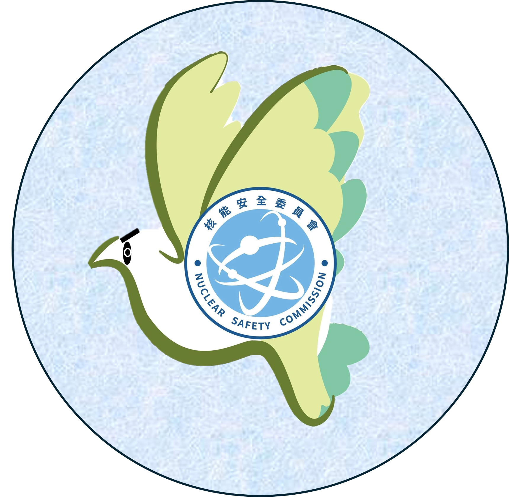

事件狀態
◀
1/1
▶
✏️ 編輯
▲
⏳ 載入中…
事件名稱
事件類型
輻射彈事件
放射性物質事件
放射性物料事件
日期與時間
📍 地圖點選
風向；風速
🌐 從氣象局抓取
旋轉角度（1km橫切面 / 5km扇形）
—
十點偵測套用新風向
取消
💾 儲存
👥 出勤人員異動
攜帶儀器異動
📍
🛰️
📐
設為量測點
📐 設為量測點
✕
量測點座標
—
查詢地址中…
分派給
載入中…
任務說明（選填）
👥 出勤人員異動
✕
⏳ 載入人員名單中…
請勾選出勤人員
取消
💾 儲存
攜帶儀器異動
✕
⏳ 載入儀器清單中…
請勾選出動儀器
取消
💾 儲存
👥 事件出勤人員
✕
⏳ 載入中…
關閉
攜帶儀器
✕
⏳ 載入中…
關閉
📊 回報數值查詢
✕
⏳ 載入中…
↻ 自動刷新
↓ 匯出
關閉
✏️
🧹
🗑️
粗細
4
📐 回報劑量
✕
📋 相關任務
📍 定位座標
取得中…
📌 地圖選點
👤 回報人員
*
— 選擇人員 —
☢️ 測量數值
*
（擇一必填，可同時填寫）
劑量率
μSv/h
mSv/h
μSv/h
污染值
α
β
cps
cpm
🔧 使用儀器（選填）
📝 備註（選填）
📷 現場照片（選填）
取消
送出回報
確認回報資料
✕
返回修改
確認送出
🗺️
🚨
🚨 事件狀態
✕
🗺️ 圖層顯示
▲
載入中…
📋 派送任務
✕
任務類型
量測任務
其他任務
派送對象
*
可多選
任務標題
*
任務說明
*
指定量測點位
可多選，非必填
▪ 1km 橫切面
▪ 十點偵測（5km扇形）
優先等級
🔴 高
🟡 中
🟢 低
✅
任務已派送！
➕ 再派一個任務
關閉
請選擇派送組別
📋 所有任務
✕
全部狀態
待執行
已完成
🔄 重新整理
關閉
📋 隊別任務
✕
全部狀態
待執行
已完成
🔄 重新整理
關閉
✕
回報劑量
此次回報是否為
量測任務的執行回報？
否，一般回報
是，量測任務
選擇對應量測任務
✕

AI
AI 應變助手（管理員）
EN
✕
GROQ
Gemini 知識庫
Groq Key
載入知識庫
Gemini Key
載入知識庫
知識庫未載入（請先「載入知識庫」）
⚡ AI 分析目前事件狀況
快速問答
應變程序
數值異常
人員防護
通報程序
污染管制
量測程序
送出
🚨
事件
🗺️
圖層
📝
回報
📋
任務
0
🧭
導航
📡
位置
📍
位置
✏️
編輯
🐦
AI鳥
🔵
我的
回報
我要回報
回報數值查詢
現場其他事情回報
任務
隊別任務
0
查看任務
0
派送任務
📁 歷史事件檢視（唯讀）
返回目前事件
現場其他事情回報
✕
新增回報
回報清單
類別
人員受傷
設備故障
交通管制
民眾狀況
其他
說明
位置（可不附）
📍 我的位置
🗺️ 地圖中心
不附位置
未附位置
照片（可不附，一張）
取消
送出回報
回報任務完成
📷 現場照片（選填）
取消
✅ 確認完成
📌 點地圖或拖曳圖釘，選擇回報位置
取消
確定
📡 位置分享中
停止
載入回放資料中…
⏮
▶
⏭
1×
10×
60×
300×
—
鏡頭跟隨
跳過空白時段
事件經過